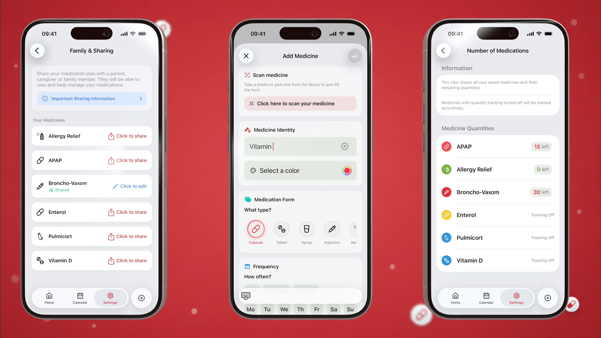

💊 PillMemo
PillMemo is an easy-to-use iOS application that helps users remember to take their medicine, track their treatment, and stay connected with people who care about them 🏥
The application allows users to set smart reminders for different types of medicine, log every dose, monitor daily progress, track refills, and generate doctor-ready reports 📅
👨💻 Technology Used
- SwiftUI
- Core Data
- CloudKit / iCloud Sync
- HealthKit
- User Notifications
- AlarmKit
- WidgetKit
- ActivityKit / Live Activities
- App Intents
- TipKit
- StoreKit / In-App Purchases
- Supabase
- AI-powered medicine scanning
- PDF generation
- VIPER Architecture
🎥 PillMemo 'in action'
🏆 My standout success is...
PillMemo 2.0 is no longer just a simple medicine reminder. It became a complete medication companion for individuals, families, and caregivers.
The biggest achievement was rebuilding the app around real medication behavior: users can now take, skip, snooze, track, share, and report doses in a way that works even when the app is closed.
Sounds simple, but the real challenge was to connect local data, iCloud sharing, notifications, widgets, Live Activities, refill logic, and reports into one reliable flow. A medicine reminder app cannot be "almost correct". If a dose is missed, duplicated, or not synced, the app loses trust. That is why the new version focuses heavily on reliability, clear dose states, and better data flow.

✨ What's new in PillMemo 2.0
- Family Care & caregiver support with shared medication tracking
- AI medicine scanner to fill medicine name, dosage, and form faster
- Doctor-ready PDF reports with intake history
- Weekly medication reports
- Daily progress dashboard on the Home screen
- Apple Health integration for symptom logging
- Strong dose alarms powered by AlarmKit for important reminders
- Live Activities for snoozed reminders on the Lock Screen and Dynamic Island
- Interactive Home Screen widgets
- Multiple daily doses with individual reminder times
- Refill tracking and low-stock alerts
- Medicine notes for instructions, side effects, or other medicine details
- Smart early-dose warning
- Notification actions: Take, Skip, and Remind Later
- Redesigned calendar with color-coded intake status
- BMI calculator with health insights
- New onboarding experience
- Community roadmap for feature requests and voting
- Liquid Glass-inspired interface for newer iOS versions
🧩 Entireness
Nevertheless, while creating this medicine reminder app, I have also included the following:
- In-App Purchases
- TipKit
- WishKit
- App Intents
- Widget Extension
- Live Activities
- AlarmKit integration
- HealthKit
- CloudKit and iCloud sharing
- Supabase backend
- Push notifications
- Strong alarm fallback to normal notifications when permission or OS support is missing
- Concurrency
- Error handling & alerts
- Onboarding
- PDF Generator
- Refill alerts
- Medicine intake history
- Calendar insights
- BMI tracking
- AI scanner
- Unit Tests
- UI Tests
- CI/CD (Xcode Cloud)
- Project organization (VIPER Architecture)
- Privacy Manifest
- Localization: English, Polish, and German
- Published in App Store (04/2024)
🧪 Tests
PillMemo uses XCTest for unit tests and UI tests.
Unit Tests
Unit tests check app logic without clicking through the real interface.
Current unit tests cover:
MedicineFrequencyTests- checks default reminder times for medicines, for example once a day, twice a day, three times a day, and custom reminders.ScheduleLogicTests- checks schedule logic: sorting reminder times, removing duplicates, keeping times inside one day, and converting time to minutes.AddNewMedicinePresenterTests- checks the logic for adding a new medicine: default reminder times, required fields for the Done button, default reminder delivery method, and saving strong alarms as normal notifications for free users.AutoMissedIntakesTests- checks automatic marking of missed doses and prevents duplicate intake records for the same scheduled dose.WidgetMedicinePersistenceTests- checks widget medicine logging, duplicate protection, package quantity updates, replacing missed doses with taken doses, and choosing the correct scheduled dose.SupabaseOnboardingAnswersClientTests- checks if onboarding answers are correctly prepared before sending to Supabase, including goal answers, pain points, headers, and JSON body.
UI Tests
UI tests launch the app and test real user flows.
Current UI tests cover:
BasicUITests- checks that the app launches correctly in UI testing mode.AppFlowUITests- checks adding a medicine and showing it on the Home screen.AppFlowUITests- checks adding patient details and showing them on the Medical ID Card screen.
ℹ️ License
The PillMemo is the property of Marcin Jędrzejak. Unauthorized copying, distribution, or modification of this application is strictly prohibited.